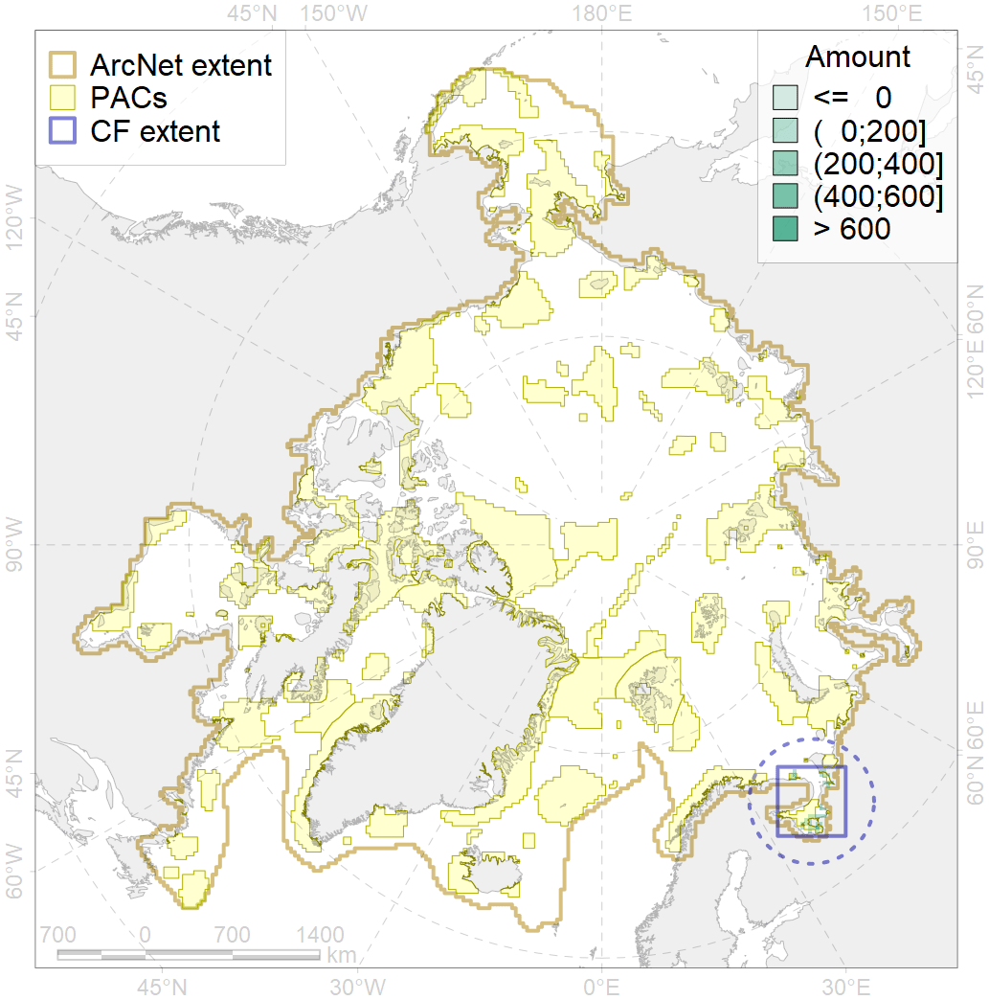
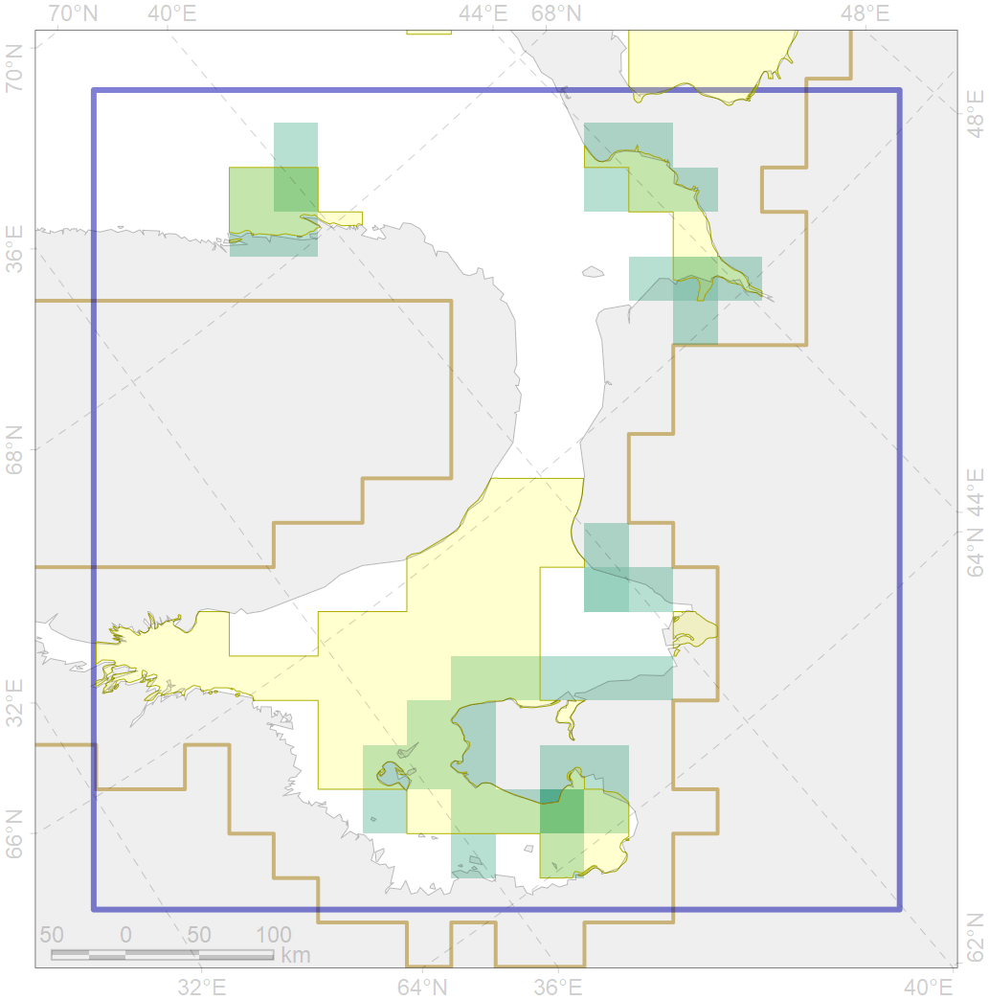

5035

| CF code | 5035 |
| CF name | Beluga of the White Sea summer core distribution |
| Time Period | 2005-2011 |
| Source(s) | Andrianov et al 2009; GROM; Glazov et al subm |
| Seasonality | June-September |
| Depth Horizon | 0-50 |
| Methodology | Satellite tagging, aerial surveys |
| Use Restrictions | |
| Author Name | Filatova |
| Notes | |
| Scenario’s Target | 0.72 |
| Target Achievement | 0.741 (Scenario: 102.9%) |
| PAC | Share of the Total Amount within the PAC | Share of the Target Achievement for the ArcNet | PAC’s Contribution to the Target Achievement |
|---|---|---|---|
| 24 | 10.5%21.9% | 13.7%27.8% | 13.3%27.0% |
| 25 | 18.5%20.4% | 24.3%27.0% | 23.6%26.2% |
| 26 | 29.3%36.2% | 36.6%45.8% | 35.6%44.5% |
| inner | 58.2%78.5% | 74.7%100.6% | 72.5%97.7% |
| outer | 41.8%92.9% | 28.3%93.9% | 27.5%91.2% |
| † supplement values are for area consistence whereas principal values are for Accenter compatible gridded stats |